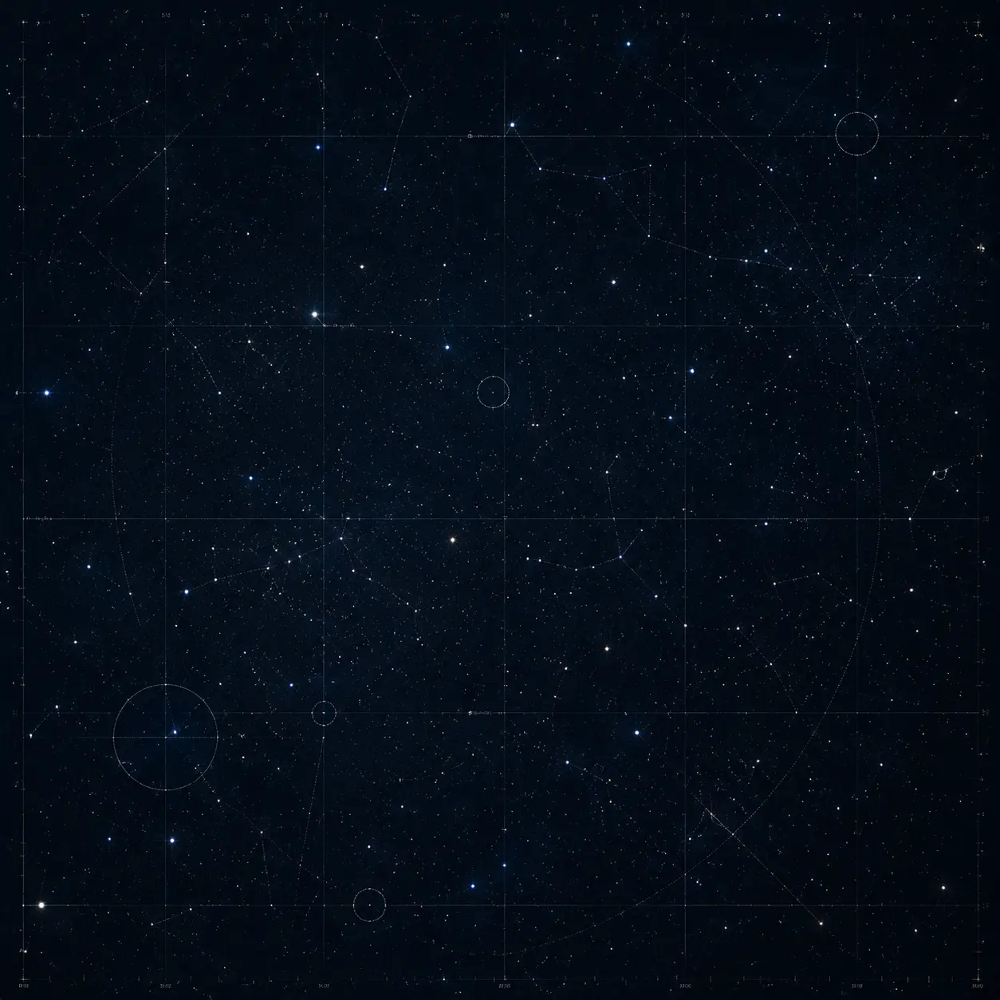
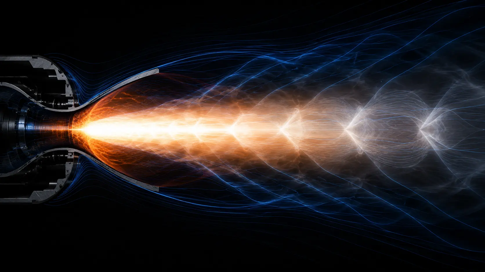
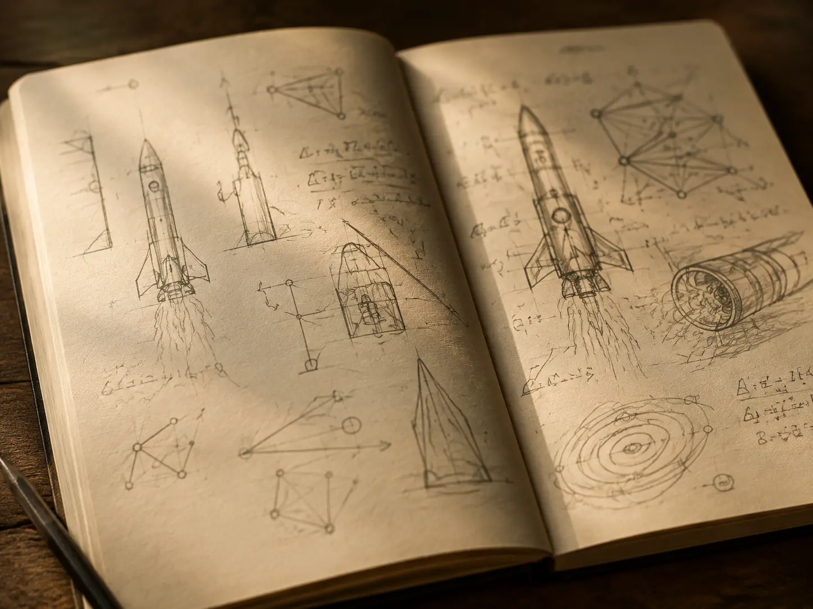
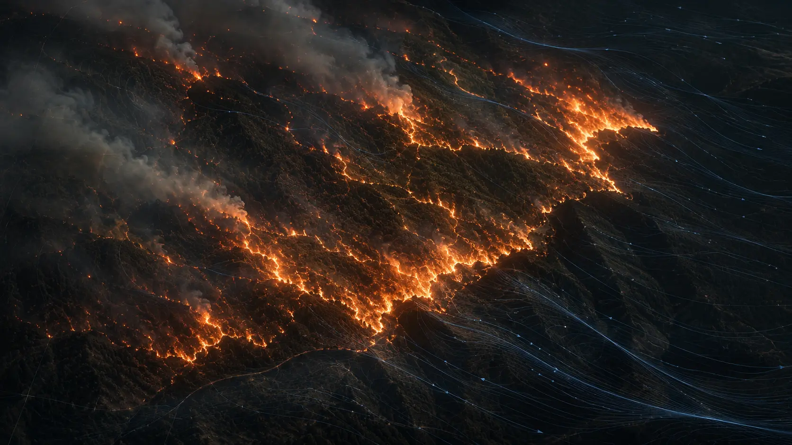
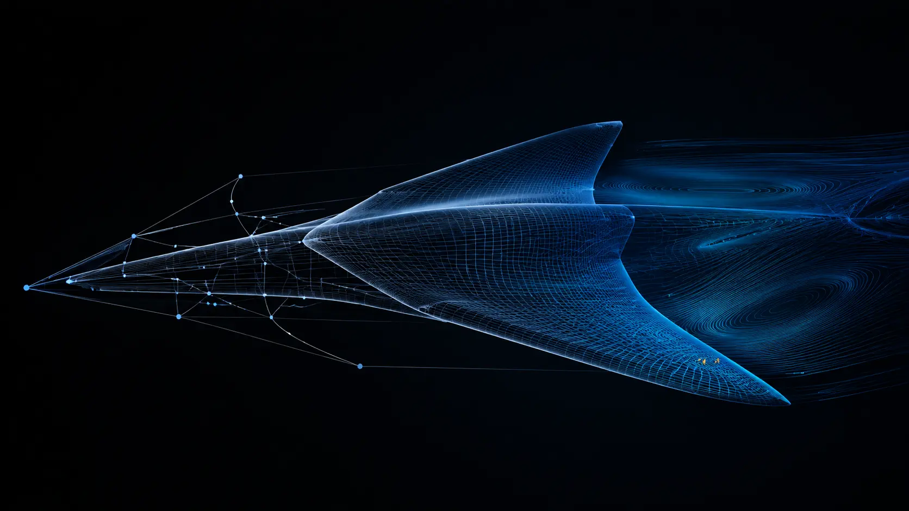
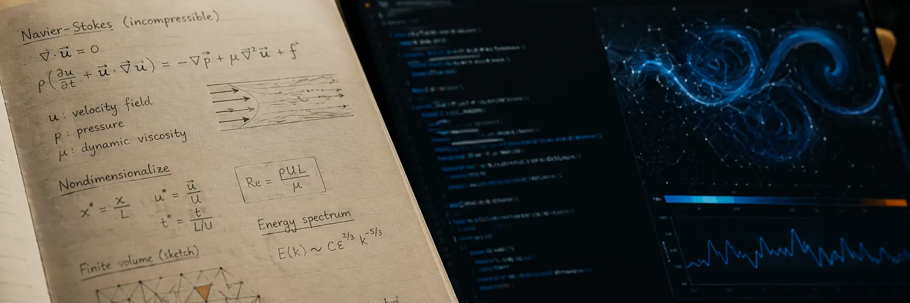

How do complex systems reveal their hidden structure?
From turbulent flow to coupled thermal systems, I’m interested in the patterns that let us understand—and eventually steer—complex physics.
Physics · computation · space · philosophy
I’m Mohamed: a physicist, computational researcher, and lifelong student of space. I work where first-principles thinking meets ambitious machines.
Currently studying, building, and following difficult questions in Waterloo.





Why I began
As a kid, I kept returning to the same impossible machines: rockets leaving Earth, spacecraft crossing distances I could barely imagine, and the people stubborn enough to build them.
Physics became the way I could move past wonder and ask better questions. Astronomy widened the scale. Computation gave me a way to test ideas that resist pencil and paper. Engineering made those ideas answer to reality.
I’m still following that same thread—through propulsion, multiphysics, scientific machine learning, quantum information, turbulence, and the human questions underneath all of it.
“The point is not to make mystery smaller. It is to become capable of meeting it.”
— a working principle
Questions I keep returning to
From turbulent flow to coupled thermal systems, I’m interested in the patterns that let us understand—and eventually steer—complex physics.
The most useful models do not replace first principles. They extend what we can observe, compute, and design.
Propulsion is one part. So are energy, materials, autonomy, institutions, courage, and a much longer view of human possibility.
Alongside technical work, I write about agency, meaning, responsibility, and the discipline of becoming unbound.
Four threads, held equally
No single project is the whole story. These are four places where my interests become concrete.
A home for computational aerospace exploration: simulations, tools, and open questions at the edge of physics and flight.
Visit projectExploring how physical context and machine learning can work together to reason about wildfire risk and response.
View repositoryLearning what ambitious engineering demands when analysis, hardware, testing, and a determined team meet.
Working close to the material world, where precision, uncertainty, and patient observation shape every conclusion.
A blog taking shape
Working thoughts from the boundary between equations, machines, and a life in pursuit of the infinite.

PhysicsDraft / 02Studying General relativity, quantum information, and the mathematics behind complex systems.
Building Computational tools for aerospace, multiphysics, and physical intelligence.
Writing Field notes on machines, meaning, freedom, and our interplanetary future.